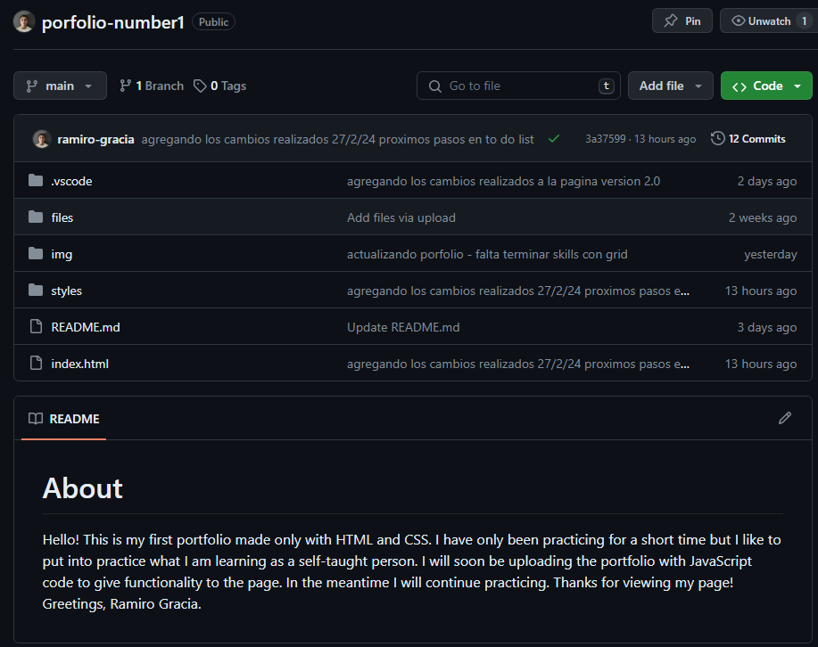
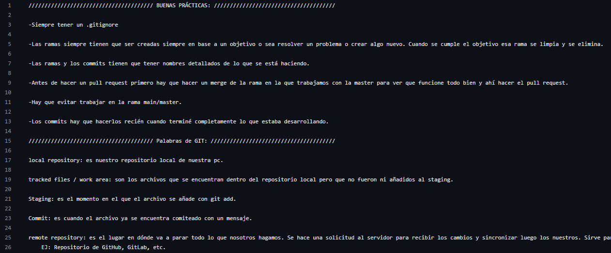
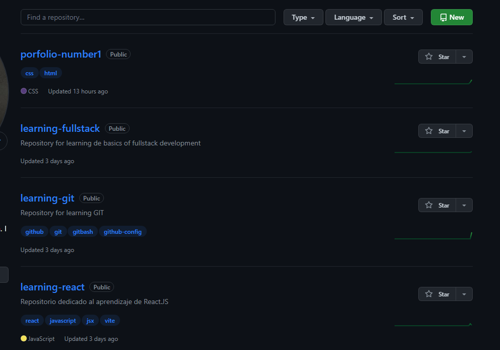

About me.
Software engineering student and self-taught web developer.
Hello! I am a computer engineering student passionate about technology, dedication and discipline. Since I was little I was self-taught in various aspects of my life... like music and learning new technologies. I like to give my best and be constantly learning, knowing new ways to improve. Below you will see the education I had, my skills and my projects.
Enjoy it!
Education & Work
Proyects & Skills.
"I don't have work experience, but I do have experience creating projects."
View all.

Proyect name:
Porfolio.
Description:
Personal porfolio made on Visual Studio Code.
Skills used:
HTML, CSS, GIT.

Proyect name:
Learning GIT.
Description:
Repository for beginners on GIT.
Skills used:
GIT.

Proyect name:
Incoming...
Description:
Incoming...
Skills used:
Incoming...